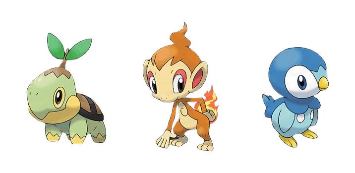
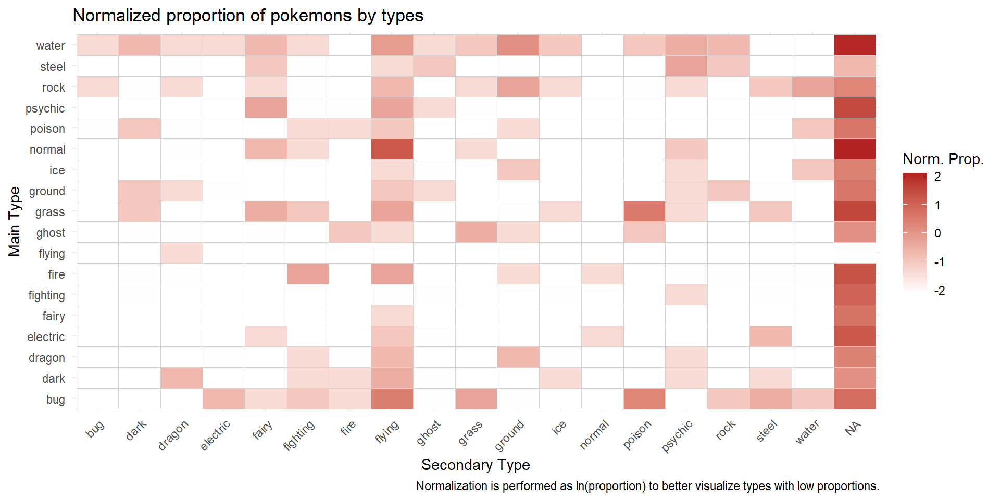
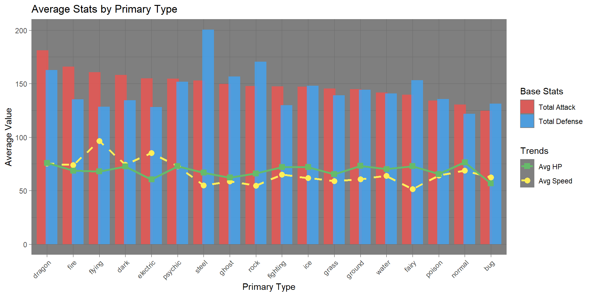

| Dual Type? | Count | Mean Total | Median Total | SD Total |
|---|---|---|---|---|
| FALSE | 400 | 403.8 | 405 | 109.8 |
| TRUE | 402 | 438.4 | 460 | 109.3 |
Who’s that pokemon?
A research on the most competitive Pokemon // A.Y. 2025-2026
Maria Briones
Riccardo Dondi
Sayatan Mandal
Our mission: catch them all!
Our main goal is to provide some insights on the pokemon world to help parents to advice their children on how to catch them all.

The pokedex of Sinnoh region
The data
We will be using the Pokemon dataset, which contains information about all the pokemon from the first generation to the seventh generation.
In total, it contains information about 949 pokemons studied on 22 variables, both numerical and categorical. After removing some NULL values in the generation_id variable and keeping only the most relevant ones, we will be working with 802 pokemons and 19 variables.
Variables
- id: the id of the pokemon (num)
- pokemon: the name of the pokemon (chr)
- height: the height of the pokemon in meters (num)
- weight: the weight of the pokemon in kilograms (num)
- base_experience: the base experience of the pokemon when catched (num)
- type_1: the primary type of the pokemon (chr)
- type_2: the secondary type of the pokemon (if it has one) (chr)
- hp: the health points of the pokemon (num)
- attack: the attack points of the pokemon (num)
- defense: the defense points of the pokemon (num)
- special_attack: the special attack points of the pokemon (num)
- special_defense: the special defense points of the pokemon (num)
- speed: the speed points of the pokemon (num)
- generation_id: the generation on wich the pokemon was introduced (num)
The insights
We worked mainly on 4 insights:
- Dual-type vs Single-type (table)
- Distribution by generation (table)
- Type proportion on the 7 generations (plot)
- Distribution of stats by type (plot)
Double typing
The first insight is about the typing of the pokemons. Is dual type more performant than single type?
To answer this question, we should look at the average total stats of both single and dual type pokemons.
| Primary Type | Dual Type? | Count | Mean Total |
|---|---|---|---|
| dragon | TRUE | 15 | 568.0 |
| fire | TRUE | 22 | 490.5 |
| psychic | TRUE | 18 | 484.4 |
| steel | TRUE | 20 | 477.9 |
| fighting | TRUE | 7 | 469.7 |
| electric | TRUE | 12 | 463.2 |
| rock | TRUE | 34 | 450.4 |
| dark | TRUE | 20 | 447.3 |
| ground | TRUE | 17 | 440.7 |
| ice | FALSE | 12 | 438.6 |
Outcome
Dual-type Pokémon average 438.4 total stats vs 403.8 for single-types — a ~37-point (9.16%) gap. Dragon dual-types lead all groups at 568 average.

Distribution by generation
Let’s continue with the distribution of pokemons by generation. We want to understand:
- Which generation has the most pokemons?
- Which generation has the most powerful pokemons?
A table should be sufficient to answer these questions.
| generation_id | n | avg_hp | avg_attack | avg_defense | avg_speed |
|---|---|---|---|---|---|
| 1 | 151 | 64.21 | 140.05 | 134.31 | 69.07 |
| 2 | 100 | 70.98 | 132.76 | 142.03 | 61.41 |
| 3 | 135 | 65.67 | 140.97 | 135.47 | 61.61 |
| 4 | 107 | 73.10 | 153.50 | 149.68 | 69.48 |
| 5 | 156 | 70.31 | 150.28 | 138.57 | 66.60 |
| 6 | 72 | 68.92 | 145.04 | 149.94 | 65.68 |
| 7 | 81 | 70.69 | 156.68 | 151.89 | 64.54 |
Outcome
The most populated generations are the 1st, 3rd and 5th, highlighted in blue in the table.
Nevertheless, the most powerfull generation considering all four stats (combined attack, combined defense, hp and speed) is the 4th generation.

The starters of 4th gen
Type proportion
Considering the 18 main types and the 19 secondary types (including “None”), there are 342 possible combinations of types.
Which combinations of types are more common and which are more rare?
To better understand the proportion of types we can use a heatmap: the more intense the color, the more pokemons of that type combination there are.

Outcome
Assuming that the species are homogeneously distributed across gens, for Single-type pokemons the most abuntant pokemons belong to the Water-None combination.
For Double-type, the most common combinations are:
- Normal-Flying (like Pidgey),
- Grass-Poison (like Bulbasaur),
- Bug-Flying (like Butterfree).
There are also 42 combinations with only one pokemon associated.
Distribution of stats by type
To have a even more clear view on the pokemon world, we analyzed also the distribution of stats grouped by type to see which are the most or less effective ones.
We used a bar-plot for the total attack and defense stats overlaped by a line plot for the health-points and speed.

Conclusion
Some battle-tested advice:
- Dual-type Pokémon are worth the extra effort (Dragon-dual-types are the best ones);
- The 4th generation is a goldmine of powerful Pokemons, so consider focusing on the Sinnoh region;
- Always keep an eye on the types synergy and on their rareness.
Who’s that pokemon?
The most competitive pokemon is Garchomp: a Dragon-Ground dual-type from the 4th generation with 608 total stats, 130 attack and 95 defense, but…
At the end, our choice was, is and will always be Pikachu!

The best pokemon ever